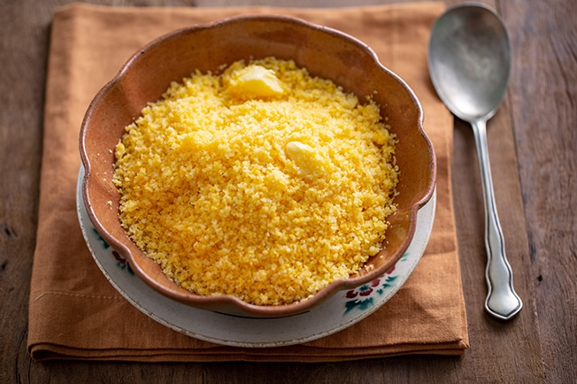

Receita Cuscuz de Milho
Cuscuz de Milho

Clássico brasileiro, é excelente variação para o pão de todos os dias.
Fica delicioso com manteiga e faz par perfeito com umas colheradas de leite de coco.
Com ovo cozido, vira café da manhã dos campeões.
| Quantidades |
Ingredientes |
| 1 ½ xícara (chá) |
Farinha de milho flocada |
| ½ colher (chá) |
Sal |
| ¾ xícara (chá) |
Água |
| 2 colheres (sopa) |
Manteiga |
Modo de Preparo:
- Numa tigela misture a farinha de milho com o sal. Regue com a água aos poucos, mexendo com uma colher para umedecer a farinha
a textura deve ficar como a de areia molhada, bem úmida. Deixe hidratar por 10 minutos
assim os flocos ficam mais macios ao cozinhar no vapor.
- Preencha o fundo da cuscuzeira com água e encaixe o cesto de vapor na panela. Transfira a farinha de milho hidratada para o cesto,
sem compactar. Tampe e leve para cozinhar em fogo alto.
- Assim que começar a ferver, vai sair um leve vapor pela lateral da tampa. Abaixe o fogo e deixe cozinhar por mais 10 minutos até o
cuscuz ficar bem macio. Verifique ao abrir a tampa: o cuscuz deve estar inflado macio ao toque.
- Desligue o fogo e, com cuidado para não se queimar ou virar o cesto, puxe a haste central para desenformar cuscuz. Transfira para uma
tigela e desfaça o cuscuz em pedaços com um garfo.
- Numa tigela pequena misture a manteiga com ¼ de xícara (chá) da água fervente da cuscuzeira. Mexa com uma colher até derreter pelo menos
a metade da manteiga – ela termina de derreter com o calor do cuscuz.
- Regue a água com manteiga sobre o cuscuz e misture com o garfo a água com manteiga deixa o cuscuz mais úmido e saboroso. Sirva a seguir.
Receita original